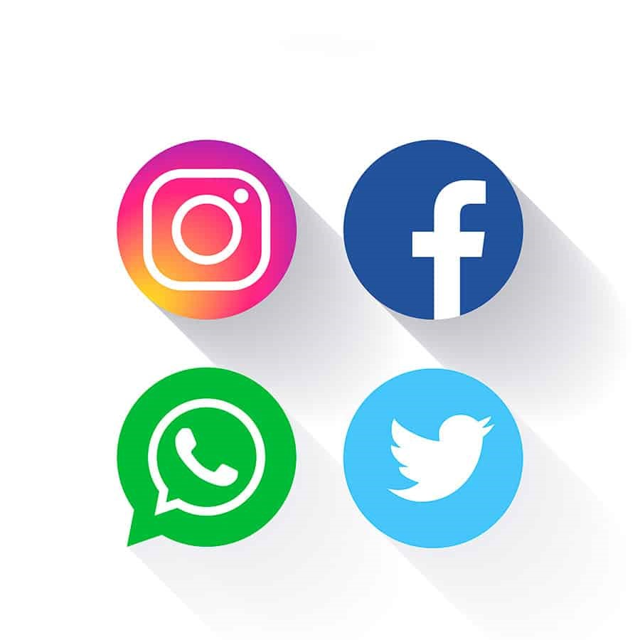

Es una compañía de origen estadounidense que ofrece servicios de redes sociales y medios sociales en línea con sede en Menlo Park, California. Su sitio web fue lanzado el 4 de febrero de 2004 por Mark Zuckerberg, junto con otros estudiantes de la Universidad de Harvard y compañeros de habitación, Eduardo Saverin, Andrew McCollum, Dustin Moskovitz y Chris Hughes. Está disponible en español desde febrero de 2008. Facebook es una plataforma que funciona sobre una infraestructura de computación basada principal y totalmente en sistemas GNU/Linux, usando el conjunto de tecnologías LAMP, entre otras. Facebook tiene alrededor de 2 320 millones de usuarios registrados alrededor de todo el mundo . De acuerdo a Alexa.com, la página subió del lugar número 60 de las más visitadas al número 7 en un año. Actualmente se encuentra en la posición 2. Quantcast la pone en el lugar número 16, y Compete.com en el 20. La página es la más popular para subir fotografías, con estadísticas de más de 83 millones de fotos subidas a diario. El 3 de noviembre de 2007, había siete mil (7000) aplicaciones en el sitio, cien agregadas cada día; y en enero de 2010 superaban las 500 000. Si una persona quiere abrir una página personal en Facebook debe realizar una serie de pasos. En primer lugar debe registrarse con su nombre y apellido y dar una dirección de correo electrónico de contacto, con la cual podrá ingresar en su cuenta, una vez que esta se halle habilitada.
El microblogging es una variante de los blogs (las bitácoras o cuadernos digitales que nacieron como diarios personales online). Su diferencia radica en la brevedad de sus mensajes y en su facilidad de publicación (pueden enviarse desde el móvil, ordenador o dispositivos con software de mensajería instantánea).
Cuando un usuario publica un mensaje en su página de Twitter, es enviado automáticamente a todos los usuarios que hayan escogido la opción de recibirlos. Dicho mensaje también puede ser visto de forma inmediata en el perfil del usuario. La plataforma de Twitter nació en octubre de 2006 en San Francisco (Estados Unidos) como una red social con ciertas características auténticas. Entre las mismas, podemos mencionar que permite un servicio absolutamente gratuito y sin publicidades (se financia con las inversiones de empresas de capital riesgo), es muy sencillo de utilizar y estableció una nueva forma de comunicación, en la que lo público y lo privado se fusionan.
Existen varios conceptos asociados al uso de Twitter: seguidores o followers son aquellas personas que siguen una cuenta, temas más populares o trending topics son los temas más mencionados de la jornada, retweetear es compartir una noticia que ha sido publicada en otra cuenta para que los seguidores de la nuestra la conozcan y hashtags son palabras o frases que comienzan con el símbolo de hash o numeral (#) para crear una lista (al hacer clic en un hashtag, Twitter realiza una búsqueda y devuelve los mensajes de todos los usuarios que hayan utilizado ese mismo hashtag).